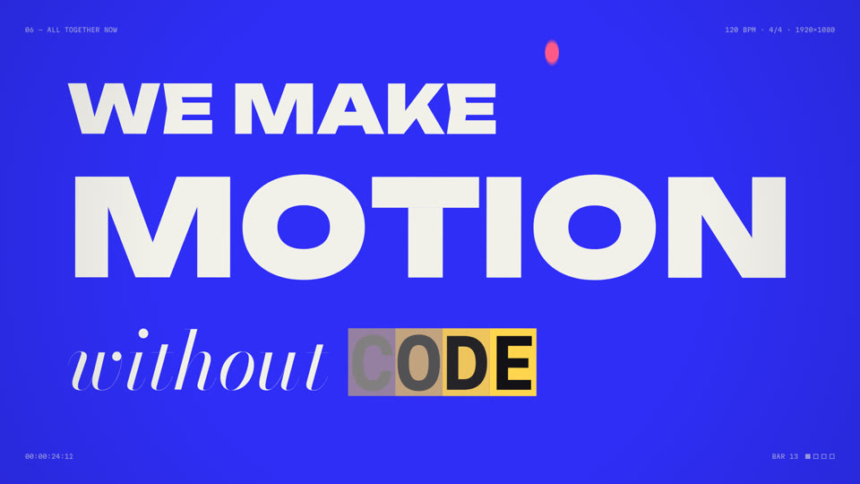
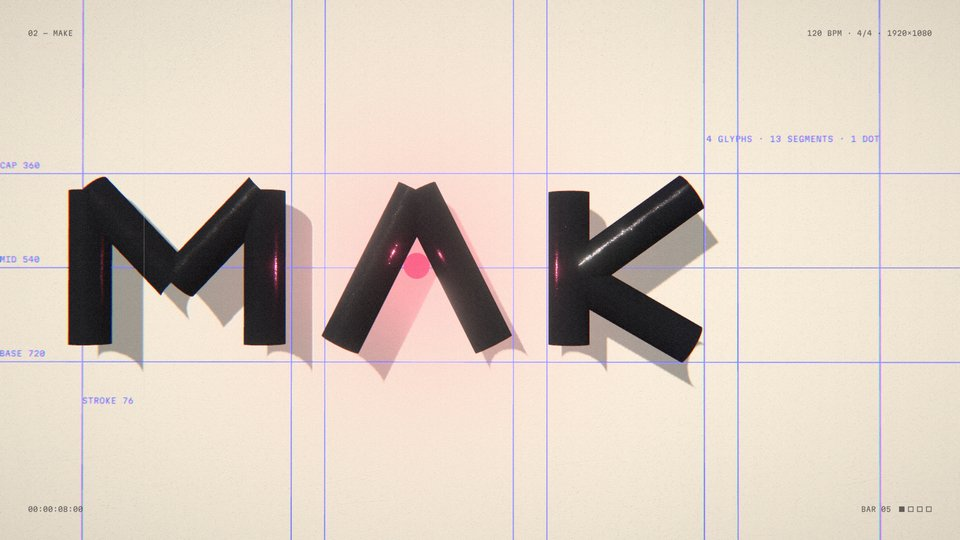
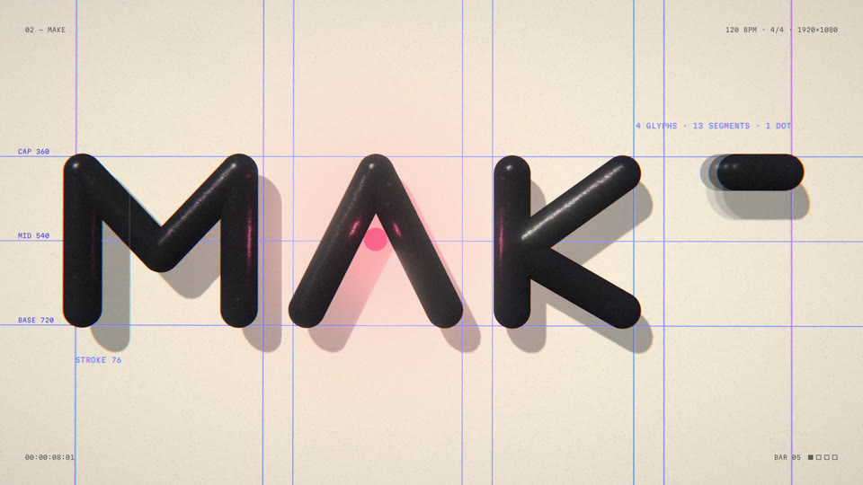
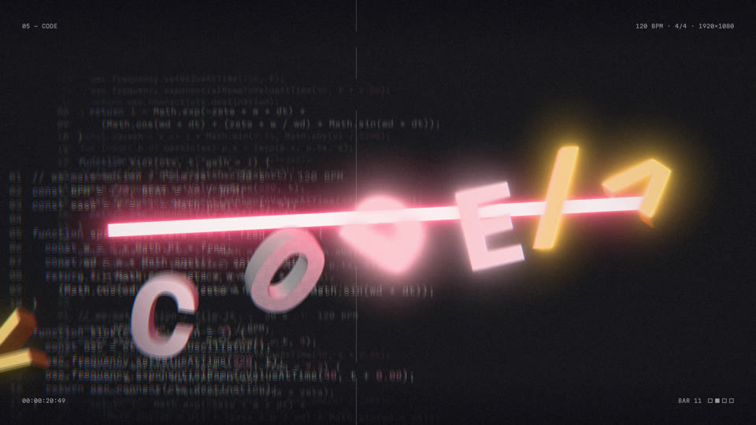

Each edition is {{FRAMES}} frames. I can’t sit back and watch a film play, so review became a pipeline: independent reviewers each take a slice, and every finding has to survive a skeptic before anyone fixes it.
300
frames inspected
150 per edition, one every 0.2 s, split across 12 inspectors in five-second windows.
22 / 46
findings confirmed
One skeptic per finding, told to refute it unless it was visible, unintended and noticeable at speed.
3
rounds of fixes
22 verifiers compared old and new frames at the same timecodes; 2 sweeps hunted for regressions.
43 / 520
claims corrected
Every technical claim in this document, checked against the source code.
How a finding survives
Inspectors got the design intent up front, so deliberate choices (a hard cut, a glitch on a hit) weren’t reported, and every finding had to cite its frames. A skeptic then opened those frames plus the neighbours 0.2 s either side. It confirmed only if the flaw was visible, unintended and noticeable at full speed; if in doubt, it refuted. More than half the findings, 24 of 46, died there. Most were transitions that look odd for a frame or two, or effects working as designed.
Fixes get checked too
Each fix was re-rendered at the same timecodes and handed to a fresh verifier with before and after. Round one: 17 fixed, 4 partly fixed, 1 not fixed, and the sweeps flagged 13 more. The misses taught the most. Loosening MOTION’s tracking only shrank a letter collision from 0.65 s to 0.2 s. What worked was a real collision pass (next page), proved by drawing each letter into its own mask: 103 frames, zero overlapping pixels. I checked rounds two and three myself, on fresh renders.
The document, audited
520 claims were checked against the code; 52 were flagged, and 43 still stood after a second agent tried to defend the original wording. Where the text was right in spirit but the code disagreed, I changed the code: wipes, camera impacts and glitches now derive from the cue sheet, as the timing page says. That refactor had to change nothing on screen. 19 test frames came back pixel-identical, and the soundtrack differed by −132.8 dB RMS, level with the −132.7 dB between two identical renders.
{{QA_SVG}}
Every finding from the frame review, placed at its timecode. Most confirmed flaws were in the 3D edition, the newer and more complex of the two.
24
We Make Motion* — ProcessReview at scale · caught and fixed
Caught, fixed, checked
Before · 2D · 11.8 s
Final · 2D · 11.8 s
Letters that fused. Riding the wave, neighbours that leaned toward each other swept into one another: MO became one shape and IO read as Ю. Now the row is laid out as a whole. Each letter’s box is rotated with its lean, and the next letter is pushed until it clears it, then re-seated on the wave. The push fades with the wave, so the slam lands on the true spacing. In 3D the gap also widens by the width the extruded side walls project to.

Before · 2D · 24.2 s
Final · 2D · 24.2 s
Grey on grey. CODE’s selection highlights faded out with transparency, which mixed butter and ink into murky greys for several frames. They now wipe off at full strength, with an ink copy of each glyph clipped inside the moving box, like a text selection being released.

Before · 3D · 8.0 s

Final · 3D · 8.0 s
Labels under the M. The MAKE guide labels lived in the 3D scene, so the M covered them as the camera drifted, and the ink tubes had lost their round joints. The labels are now drawn flat over the frame, each placed where its guide line lands on screen, and the joints are back.
Before · 3D · 20.8 s

Final · 3D · 20.8 s
Crossed paths. The falling glyphs pivoted at their baselines and their paths crossed, so C, O and D merged mid-air. Each now pivots at its cap-height centre, fans out from the middle and falls at its own depth.